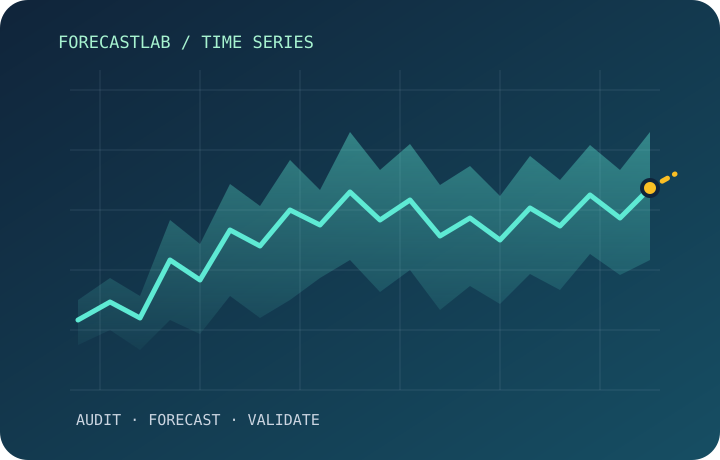
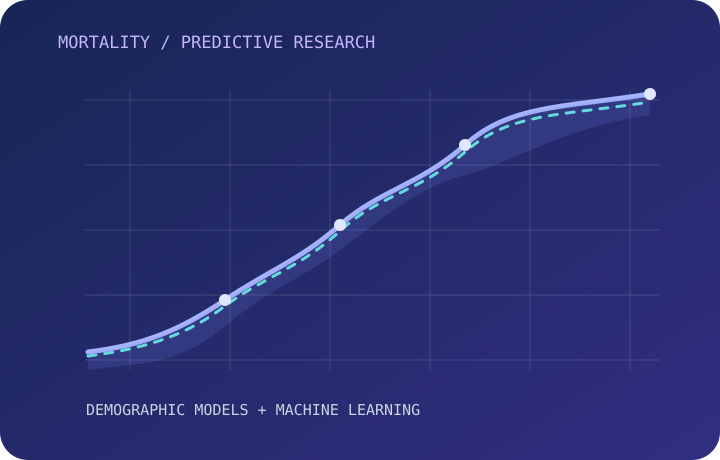
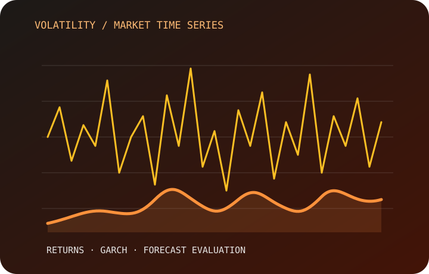
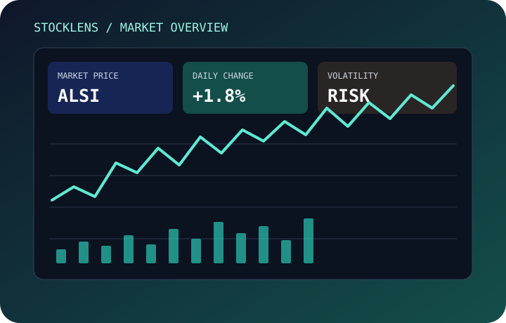

Forecasting
ForecastLab
A reproducible workspace for time series data auditing, forecasting experiments, and model evaluation.
Read case study ↗Portfolio / Data, models, and measurable outcomes
I’m Kekeletso Basholo. I combine statistical thinking, machine learning, and practical analytics to investigate problems, build predictive solutions, and communicate what the evidence says.
Selected work

A reproducible workspace for time series data auditing, forecasting experiments, and model evaluation.
Read case study ↗
An evaluation of neural networks and established demographic methods for mortality prediction.
Read case study ↗
Time series research examining volatility dynamics across market indices.
Read case study ↗
An interactive JSE and US equities analytics platform for price exploration, market statistics, and volatility research.
Read case study ↗Method
A strong analysis is more than a model score. I document the problem, justify the method, validate results, and communicate limitations so the work can be understood and reproduced.
01 / Challenge
Clarify the question, context, data constraints, and desired outcome.
02 / Strategy
Select an appropriate baseline, modelling approach, and evaluation design.
03 / Execution
Prepare data, check assumptions, and validate out of sample.
04 / Results
Present metrics, comparisons, limitations, and next steps.
Background
My background in Mathematics and Statistical Sciences and my Applied Statistics Honours studies have shaped how I approach analytical questions: start with the evidence, understand the assumptions, and choose tools that fit the problem.
I have worked on data analysis and reporting tasks involving dashboards, data preparation, requirements analysis, and performance reporting.
Credentials and experience
Certification
Data analysis and visualisation
Forage, practical simulation
Data analytics experience
Let's connect
I’m interested in data science, machine learning, analytics, and research opportunities where rigorous thinking can create practical value.